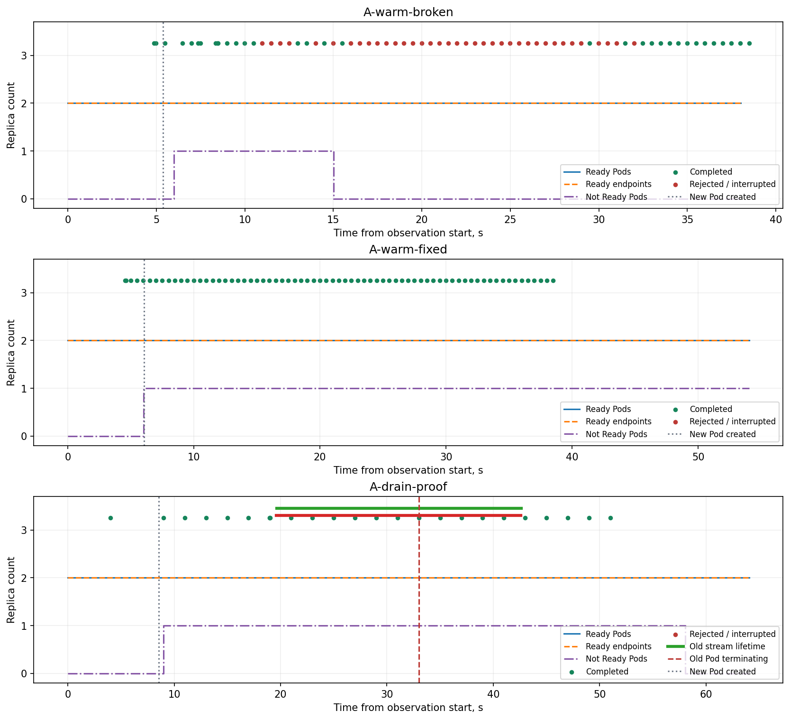
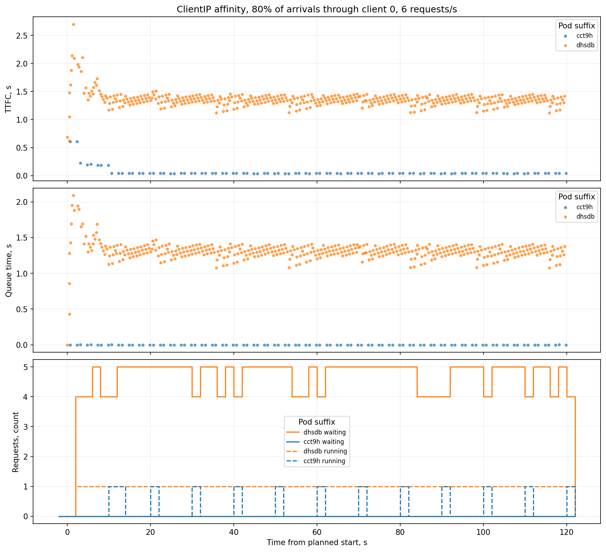
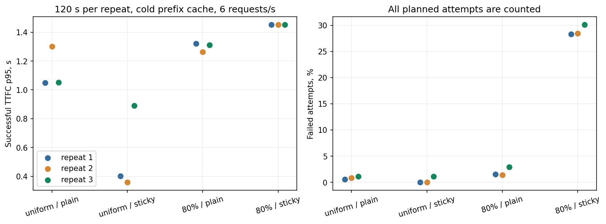
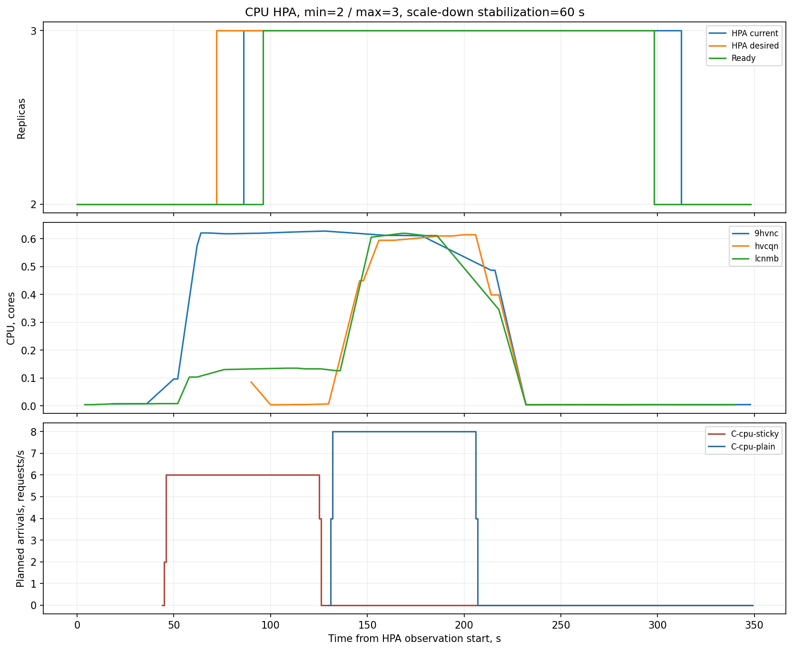

ДЗ 11. Kubernetes под нагрузкой
Наблюдаемый CPU-стенд для потокового API. Измерения выполнены в локальном kind, backend_mode=simulated.
Среда и воспроизводимость
Продолжен API ДЗ 8+9+10 — FastAPI, /health, /ready, /generate, фоновый прогрев и проверенная неизменяемая идентичность загруженного артефакта. В ДЗ 11 добавлены NDJSON-поток, очередь, ограничение допуска, Prometheus, история в запросе и Kubernetes. Синхронный ответ содержит answer и model_id. В опыте A используются два слота на Pod, в B и C — один. max_new_tokens в имитаторе ограничивает число частей. Фактическая модель и GPU в опытах отсутствуют.
Kubernetes 1.32.2, kind 0.27.0, Helm 3.17.3. Docker Desktop выделяет 8 CPU и около 3,82 GiB RAM. API запрашивает 100m CPU и 64 MiB RAM, лимит 750m и 192 MiB на Pod. Две реплики, HPA до трёх. Prometheus хранит 8 часов метрик с лимитом TSDB 128 MB и emptyDir 256 MiB, Grafana emptyDir 128 MiB. Теги образов, фактические digest и размеры сохранены в results. Веса представляют два небольших JSON-файла в immutable ConfigMap.
Свободное место перед запуском · Начальное использование Docker · Лимиты Docker · Версии, digest и фактический размер · Запуск и удаление
Метод измерения
Клиенты — четыре Pod с разными IP. Одна попытка соответствует одному request ID, повторов нет. Расписание поступления сохранено до отправки. HTTP keep-alive выключен через max_keepalive_connections=0. Длительности считаются time.monotonic, сервер использует time.perf_counter. TTFC = время первой содержательной JSON-части − время отправки. Inter-chunk latency = разность времён соседних частей, для одной части наблюдение отсутствует. Полная длительность включает получение терминального done. HTTP 200 без всех частей и done считается обрывом. Клиентский timeout = 32 с. Процентили успешных ответов рассчитаны линейной интерполяцией, рядом указано число ответов. Размер входа одинаков для сравниваемых политик, 12 префиксов, 4 части по 80 мс. В каждом сравнении 720 поступлений за 120 с, 6 запросов/с. Перед каждым прогоном SIGUSR1 очищает LRU-кеш, прогрев завершён.
Состояние Ready, EndpointSlice и HPA опрашивается раз в 1 с в A и 2 с в C. Ошибок наблюдателя — 0. Полный журнал находится в results/timeline.jsonl. Время между отправками и планом отражено как send_lag_s. Backend сообщает Pod, SHA-256, модель, request ID и наблюдаемый peer IP в заголовках и частях. История и session ID остаются в запросах и журнале. Высококардинальные идентификаторы в метрики не включены.
Опыт A — прогрев, выпуск и откат
Гипотеза — HTTP-процесс может быть доступен раньше готовности backend. Исходная проверка probeMode=http-only возвращает готовность сразу. Сценарий отправляет одинаковый поток во время замены реплик. Сервер записывает received с warm=false и возвращает warming/503. Исправленная startup/readiness проверяет завершение 20-секундного прогрева и успешную проверку артефакта. Liveness /health проверяет работу процесса, поэтому прогрев и некорректная версия не вызывают немедленный liveness restart. Startup budget равен прогреву плюс 42 с. Старая готовая реплика остаётся в Service до готовности новой. Kubernetes о probes.
| Проверка | Результат |
|---|---|
| cold request reached the defective deployment | PASS |
| corrected warmup never receives a cold request | PASS |
| old stream completes while healthy B rolls out | PASS |
| bad B excluded; actual A hash after Helm rollback | PASS |
| replacement restores verified version and dialogue | PASS |
| dialogues stay isolated | PASS |
| forced kill counts admissions, rejections and interrupted streams separately | PASS |
| active old stream completes after Pod enters Terminating | PASS |
Штатный rolling update A→B использует maxUnavailable=0, maxSurge=1. Длительные ответы запускаются до обновления и во время прогрева B. preStop 5 с оставляет время на исключение endpoint, terminationGracePeriodSeconds=45, Uvicorn ждёт активные ответы до 35 с. В дополнительной проверке длинный ответ содержит 32 части с интервалом 740 мс и длится около 24 с с учётом очереди. Начатый поток обслуживается исходным процессом до завершения. Для дефектной B намеренно задан неверный SHA-256, новая реплика остаётся неготовой, A продолжает отвечать. Helm rollback возвращает ревизию A. Подтверждение использует фактический model_id и хеш в ответах. При удалении Pod новый процесс заново проверяет тот же файл A. Продолжение диалога и различимые контрольные строки двух сессий проверяются через Service.
Отдельный опыт SIGKILL завершает именно PID контейнера API внутри kind. Сохранены контейнер, Pod и время воздействия. Сначала отправляется 11 одновременных запросов, поэтому журнал содержит как 429 на пределе допуска, так и оборванные ответы со статусом 200. После отказа проверяются Ready=false, endpoint exclusion, restartCount и восстановление того же Pod после прогрева. Нули ошибок штатного выпуска относятся к сохранённому объёму и тайм-аутам этой нагрузки.
| Поток при завершении Pod | Terminating после начала rollout, с | Ответ завершён после начала rollout, с |
|---|---|---|
| A-drain-old-0-0000 | 51.047 | 35.645 |
| A-drain-old-1-0000 | 26.031 | 35.595 |
| После SIGKILL | Время от воздействия, с |
|---|---|
| Ready=false | 0.906 |
| Исключение из Ready endpoints | 0.906 |
| Первый успешный запрос к перезапущенному Pod | 25.171 |
Оборванных ответов с уже полученными частями — 2. Остальные оборванные попытки ожидали первую часть. Разрешение наблюдения готовности — около 1 с.

Опыт B — ClientIP и горячая реплика
Гипотеза — закрепление клиента сохраняет локальность префикса, но концентрирует очередь. Сравниваются два Service над одним Deployment. plain использует sessionAffinity=None, sticky — ClientIP с timeoutSeconds=10800. Сетевые параметры kube-proxy, IP клиентов и Service сохранены в results/network.json. Клиенты находятся внутри кластера, identity peer в трассе позволяет проверить адрес, который видит API. Первый сценарий равномерно распределяет запросы по четырём источникам, второй отдаёт ровно 80% клиенту 0, остальные делятся поровну. В равномерном сценарии ClientIP четыре IP закрепились по два за каждым Pod. В этом контрольном случае распределение 360/360 не создало горячую реплику. При 80% через клиента 0 та же таблица привязки концентрирует большую часть поступлений на его Pod. На каждом Pod один running slot и максимум 5 ожидающих, LRU вместимостью 32 префикса. Имитация hit стоит 35 мс, miss 180 мс, последующие части стоят по 80 мс. Кеш пуст в начале каждой 120-секундной фазы. Порядок plain/sticky меняется между повторами.


Фактические отправки местами отстают от плана. Максимум в третьем горячем sticky-прогоне составляет 4,86 с, в третьем горячем plain — 3,04 с. В третьем равномерном sticky задержка достигает 1,57 с, восемь отказов находятся в первых 5,67 с фазы при сохранении распределения 360/360. Начальные отставания создают пакеты догоняющих запросов. Первичные результаты сохранены целиком, p95 и максимум send_lag показаны отдельно. Желаемое расписание и входы одинаковы, фактический тайминг отличается. Это ограничивает точность причинного сравнения отдельных отказов.
| Прогон | Запланировано | Успешно | Отказ | Обрыв | Timeout | p50 TTFC, с | p95 TTFC, с | p95 / max lag, с |
|---|---|---|---|---|---|---|---|---|
| B-80pct-plain-1 | 720 | 709 | 11 | 0 | 0 | 0.287 | 1.322 | 0.004 / 0.672 |
| B-80pct-plain-2 | 720 | 710 | 10 | 0 | 0 | 0.276 | 1.264 | 0.004 / 0.877 |
| B-80pct-plain-3 | 720 | 699 | 21 | 0 | 0 | 0.315 | 1.310 | 0.006 / 3.044 |
| B-80pct-sticky-1 | 720 | 516 | 204 | 0 | 0 | 1.333 | 1.452 | 0.004 / 0.379 |
| B-80pct-sticky-2 | 720 | 515 | 205 | 0 | 0 | 1.333 | 1.453 | 0.004 / 0.668 |
| B-80pct-sticky-3 | 720 | 503 | 217 | 0 | 0 | 1.330 | 1.452 | 0.005 / 4.865 |
| B-uniform-plain-1 | 720 | 716 | 4 | 0 | 0 | 0.270 | 1.050 | 0.003 / 0.070 |
| B-uniform-plain-2 | 720 | 714 | 6 | 0 | 0 | 0.248 | 1.301 | 0.002 / 0.114 |
| B-uniform-plain-3 | 720 | 712 | 8 | 0 | 0 | 0.276 | 1.051 | 0.003 / 0.381 |
| B-uniform-sticky-1 | 720 | 720 | 0 | 0 | 0 | 0.041 | 0.401 | 0.002 / 0.083 |
| B-uniform-sticky-2 | 720 | 720 | 0 | 0 | 0 | 0.041 | 0.359 | 0.002 / 0.031 |
| B-uniform-sticky-3 | 720 | 712 | 8 | 0 | 0 | 0.043 | 0.889 | 0.003 / 1.570 |
| Прогон | Сэмплы с очередью и свободным слотом на другом Pod | Всего сэмплов |
|---|---|---|
| B-80pct-plain-1 | 18 | 63 |
| B-80pct-plain-2 | 16 | 63 |
| B-80pct-plain-3 | 13 | 63 |
| B-80pct-sticky-1 | 47 | 63 |
| B-80pct-sticky-2 | 47 | 63 |
| B-80pct-sticky-3 | 34 | 63 |
| B-uniform-plain-1 | 15 | 63 |
| B-uniform-plain-2 | 22 | 63 |
| B-uniform-plain-3 | 20 | 63 |
| B-uniform-sticky-1 | 0 | 63 |
| B-uniform-sticky-2 | 1 | 63 |
| B-uniform-sticky-3 | 0 | 63 |
| Прогон / Pod | Получено | Успешно | p95 очередь, с | p95 TTFC, с | Hit, % |
|---|---|---|---|---|---|
| B-80pct-plain-1 / cct9h | 375 | 367 | 1.320 | 1.374 | 96.7 |
| B-80pct-plain-1 / dhsdb | 345 | 342 | 1.181 | 1.226 | 96.5 |
| B-80pct-plain-2 / cct9h | 376 | 371 | 0.983 | 1.065 | 96.8 |
| B-80pct-plain-2 / dhsdb | 344 | 339 | 1.261 | 1.308 | 96.5 |
| B-80pct-plain-3 / cct9h | 366 | 353 | 1.180 | 1.314 | 96.6 |
| B-80pct-plain-3 / dhsdb | 354 | 346 | 1.227 | 1.307 | 96.5 |
| B-80pct-sticky-1 / cct9h | 96 | 96 | 0.001 | 0.188 | 91.7 |
| B-80pct-sticky-1 / dhsdb | 624 | 420 | 1.411 | 1.460 | 97.1 |
| B-80pct-sticky-2 / cct9h | 96 | 96 | 0.001 | 0.187 | 91.7 |
| B-80pct-sticky-2 / dhsdb | 624 | 419 | 1.413 | 1.455 | 97.1 |
| B-80pct-sticky-3 / cct9h | 96 | 96 | 0.001 | 0.346 | 91.7 |
| B-80pct-sticky-3 / dhsdb | 624 | 407 | 1.436 | 1.494 | 97.1 |
| B-uniform-plain-1 / cct9h | 381 | 377 | 0.990 | 1.045 | 96.8 |
| B-uniform-plain-1 / dhsdb | 339 | 339 | 0.948 | 1.052 | 96.5 |
| B-uniform-plain-2 / cct9h | 383 | 377 | 1.326 | 1.376 | 96.8 |
| B-uniform-plain-2 / dhsdb | 337 | 337 | 0.752 | 0.810 | 96.4 |
| B-uniform-plain-3 / cct9h | 361 | 361 | 0.861 | 0.923 | 96.7 |
| B-uniform-plain-3 / dhsdb | 359 | 351 | 1.263 | 1.331 | 96.6 |
| B-uniform-sticky-1 / cct9h | 360 | 360 | 0.283 | 0.376 | 98.3 |
| B-uniform-sticky-1 / dhsdb | 360 | 360 | 0.309 | 0.402 | 98.3 |
| B-uniform-sticky-2 / cct9h | 360 | 360 | 0.241 | 0.336 | 98.3 |
| B-uniform-sticky-2 / dhsdb | 360 | 360 | 0.259 | 0.360 | 98.3 |
| B-uniform-sticky-3 / cct9h | 360 | 356 | 0.847 | 0.901 | 98.3 |
| B-uniform-sticky-3 / dhsdb | 360 | 356 | 0.809 | 0.884 | 98.3 |
Исправление — sessionAffinity=None и новое TCP-соединение на каждую попытку. В условиях этого имитатора повторный miss добавляет 145 мс, а накопившаяся очередь на горячем Pod может стоить больше. Трасса plain с 80% поступлений через одного клиента также сохраняет контрольный результат, при котором перекос источников не превращается в закрепление за единственной репликой. Каждый запрос маршрутизируется отдельно. TCP Service выбирает endpoint на соединение, поэтому сохранение длинных keep-alive соединений потребовало бы отдельного опыта. На реальном inference engine следует измерить стоимость prefill, KV cache hit, eviction, длину промпта, конкурентный decode, batching и стоимость маршрутизатора. Результаты относятся к заданным задержкам имитатора.
Histogram и клиентский журнал
На сервере Histogram учитывает TTFC, total и queue только завершённых ответов. Счётчики исходов хранят ok, overloaded, warming и aborted. Журнал клиента остаётся источником правды для SIGKILL, поскольку погибший процесс не успевает увеличить aborted. Для перцентилей используется sum по bucket-счётчикам с сохранением le. На дашборде применяется разрез pod. В таблице приведены клиентский p95, квантиль из разности фактических накопленных bucket перед/после фазы и PromQL за соответствующее окно. Число bucket-наблюдений должно совпадать с числом завершённых попыток. Различие времени объясняется сетевым обменом, буферизацией и интерполяцией внутри границ bucket. increase дополнительно экстраполирует края окна, поэтому точная сверка количества выполнена разностью cumulative counters. Prometheus о Histogram.
histogram_quantile(0.95, sum by (le) (increase(hw11_ttfc_seconds_bucket[124s]))) histogram_quantile(0.95, sum by (pod, le) (rate(hw11_ttfc_seconds_bucket[30s])))
| Прогон | Клиент N | Histogram N | Клиент p95, с | Bucket p95, с | PromQL p95, с |
|---|---|---|---|---|---|
| B-80pct-plain-1 | 709 | 709 | 1.322 | 1.344 | 1.343 |
| B-80pct-plain-2 | 710 | 710 | 1.264 | 1.287 | 1.287 |
| B-80pct-plain-3 | 699 | 699 | 1.310 | 1.308 | 1.308 |
| B-80pct-sticky-1 | 516 | 516 | 1.452 | 1.491 | 1.491 |
| B-80pct-sticky-2 | 515 | 515 | 1.453 | 1.489 | 1.489 |
| B-80pct-sticky-3 | 503 | 503 | 1.452 | 1.494 | 1.494 |
| B-uniform-plain-1 | 716 | 716 | 1.050 | 1.054 | 1.054 |
| B-uniform-plain-2 | 714 | 714 | 1.301 | 1.286 | 1.286 |
| B-uniform-plain-3 | 712 | 712 | 1.051 | 1.053 | 1.053 |
| B-uniform-sticky-1 | 720 | 720 | 0.401 | 0.375 | 0.375 |
| B-uniform-sticky-2 | 720 | 720 | 0.359 | 0.338 | 0.337 |
| B-uniform-sticky-3 | 712 | 712 | 0.889 | 0.879 | 0.879 |
Опыт C — HPA и алерты
Гипотеза — вычислительная работа при настроенных CPU requests вызывает HPA 2→3, а снижение нагрузки возвращает две реплики. В имитаторе cpu_ms=300 выполняет SHA-256 до расходования 300 мс thread CPU, работа вынесена из event loop. Это создаёт измеряемое потребление CPU. Resource metrics API проверяется до опыта. HPA autoscaling/v2 имеет target CPU=65% от request 100m, minReplicas=2, maxReplicas=3, scaleDown stabilizationWindowSeconds=60. Для двух готовых реплик значения 100% и 0% дают среднее 50%, ниже target. Значения 150% и 0% дают 75%, выше target и стандартной 10%-й tolerance, что допускает рост до трёх реплик. Очередь сама по себе не является CPU-метрикой. В опыте B значительная часть стоимости реализована ожиданием, в C добавлена вычислительная работа. Первый участок повторяет горячего клиента со sticky — 6 поступлений/с в течение 80 с. Второй использует plain — 8 поступлений/с в течение 75 с. Это ступени вычислительной нагрузки для HPA. Контролируемое сравнение политик выполнено в опыте B. Средняя CPU способна превысить target даже при одной горячей реплике. ClientIP может продолжить отправлять большинство запросов старой реплике после появления третьей, что проверяется по ответам. Kubernetes о HPA.
Максимум currentReplicas в журнале — 3. Возврат current=desired=2 после завершения CPU-нагрузки занял 103.2 с. Эта длительность включает окно CPU-метрики, цикл HPA и стабилизацию. Сохранены исходные условия и итоговый HPA YAML.
| Pod | Создан UTC | Первый переход Ready UTC |
|---|---|---|
| hw11-api-545ffc6bc8-mc5k6 | 2026-11-17T21:24:08Z | 2026-11-17T21:24:32Z |
| hw11-api-7c7fcdc7b9-9hvnc | 2026-11-17T21:25:05Z | 2026-11-17T21:25:29Z |
| hw11-api-7c7fcdc7b9-lcnmb | 2026-11-17T21:25:29Z | 2026-11-17T21:25:54Z |
| hw11-api-7c7fcdc7b9-hvcqn | 2026-11-17T21:27:05Z | 2026-11-17T21:27:29Z |

| CPU-фаза / Pod | Получено | Успешно | p95 очередь, с | p95 TTFC, с |
|---|---|---|---|---|
| C-cpu-plain / 9hvnc | 215 | 153 | 2.446 | 2.876 |
| C-cpu-plain / hvcqn | 205 | 149 | 2.581 | 3.119 |
| C-cpu-plain / lcnmb | 180 | 153 | 2.485 | 2.906 |
| C-cpu-sticky / 9hvnc | 448 | 162 | 2.555 | 2.989 |
| C-cpu-sticky / hvcqn | 0 | 0 | — | — |
| C-cpu-sticky / lcnmb | 32 | 32 | 0.001 | 0.472 |
HighTTFC проверяет p95 > 0,65 с при минимум 15 завершённых ответах за 30 с. HighRejectionRatio проверяет долю отказов > 10% при минимум 15 исходах за 30 с. Оба условия удерживаются 16 с, evaluation_interval=2 с. Перед вычислительной нагрузкой выполняется 40-секундная базовая фаза. CPU-нагрузка повышает очередь и отказы, после её снятия условие уходит в inactive. Состояния pending/firing сохраняются в timeline и в query_range ALERTS.
| Алерт | Наблюдавшиеся состояния |
|---|---|
| HighRejectionRatio | firing, inactive, pending |
| HighTTFC | firing, inactive, pending |
Все попытки
| Фаза | План / отправлено | Успешно | Отказ / обрыв / timeout | p50 / p95 TTFC, с | p95 полного ответа, с |
|---|---|---|---|---|---|
| A-bad-B | 30 / 30 | 30 | 0 / 0 / 0 | 0.187 / 0.686 | 0.687 |
| A-dialogue-after | 2 / 2 | 2 | 0 / 0 / 0 | 0.633 / 0.663 | 1.031 |
| A-dialogue-before | 1 / 1 | 1 | 0 / 0 / 0 | 1.006 / 1.006 | 1.373 |
| A-drain-old-0 | 1 / 1 | 1 | 0 / 0 / 0 | 0.635 / 0.635 | 23.637 |
| A-drain-old-1 | 1 / 1 | 1 | 0 / 0 / 0 | 0.586 / 0.586 | 23.588 |
| A-drain-service | 23 / 23 | 23 | 0 / 0 / 0 | 0.186 / 0.754 | 1.913 |
| A-force | 11 / 11 | 0 | 4 / 7 / 0 | — / — | — |
| A-force-bind | 1 / 1 | 1 | 0 / 0 / 0 | 0.579 / 0.579 | 0.580 |
| A-force-recovery | 36 / 36 | 36 | 0 / 0 / 0 | 0.041 / 0.414 | 0.415 |
| A-restore-A | 32 / 32 | 32 | 0 / 0 / 0 | 0.187 / 0.693 | 0.694 |
| A-rollback | 10 / 10 | 10 | 0 / 0 / 0 | 0.121 / 0.715 | 0.716 |
| A-rollout | 24 / 24 | 24 | 0 / 0 / 0 | 0.187 / 0.688 | 16.221 |
| A-warm-broken | 70 / 70 | 33 | 37 / 0 / 0 | 0.188 / 0.761 | 0.763 |
| A-warm-fixed | 70 / 70 | 70 | 0 / 0 / 0 | 0.043 / 0.394 | 0.394 |
| B-80pct-plain-1 | 720 / 720 | 709 | 11 / 0 / 0 | 0.287 / 1.322 | 1.567 |
| B-80pct-plain-2 | 720 / 720 | 710 | 10 / 0 / 0 | 0.276 / 1.264 | 1.508 |
| B-80pct-plain-3 | 720 / 720 | 699 | 21 / 0 / 0 | 0.315 / 1.310 | 1.558 |
| B-80pct-sticky-1 | 720 / 720 | 516 | 204 / 0 / 0 | 1.333 / 1.452 | 1.700 |
| B-80pct-sticky-2 | 720 / 720 | 515 | 205 / 0 / 0 | 1.333 / 1.453 | 1.699 |
| B-80pct-sticky-3 | 720 / 720 | 503 | 217 / 0 / 0 | 1.330 / 1.452 | 1.697 |
| B-uniform-plain-1 | 720 / 720 | 716 | 4 / 0 / 0 | 0.270 / 1.050 | 1.297 |
| B-uniform-plain-2 | 720 / 720 | 714 | 6 / 0 / 0 | 0.248 / 1.301 | 1.547 |
| B-uniform-plain-3 | 720 / 720 | 712 | 8 / 0 / 0 | 0.276 / 1.051 | 1.297 |
| B-uniform-sticky-1 | 720 / 720 | 720 | 0 / 0 / 0 | 0.041 / 0.401 | 0.648 |
| B-uniform-sticky-2 | 720 / 720 | 720 | 0 / 0 / 0 | 0.041 / 0.359 | 0.604 |
| B-uniform-sticky-3 | 720 / 720 | 712 | 8 / 0 / 0 | 0.043 / 0.889 | 1.137 |
| C-baseline | 80 / 80 | 80 | 0 / 0 / 0 | 0.041 / 0.387 | 0.469 |
| C-cpu-plain | 600 / 600 | 455 | 145 / 0 / 0 | 2.531 / 2.920 | 3.003 |
| C-cpu-sticky | 480 / 480 | 194 | 286 / 0 / 0 | 2.856 / 2.988 | 3.071 |
Ревью предложения закрепить диалог за Pod
При очереди на A в 3 с и стоимости пересчёта на свободной B в 0,8 с новый запрос следует отправить B. При одинаковой оставшейся работе ожидаемое преимущество по первой части составляет 2,2 с. В расчёт нужно добавить измеренные p95/p99 задержки очереди, prefill и decode, размер входа, доступную память KV-кеша, точность сведений о кеше, сетевые задержки и срок актуальности загрузки. Допуск к запросу требует свободного слота либо ограниченной очереди с оценкой завершения до deadline, при исчерпании лимита возвращается явный 429. Повтор клиента получает отдельный attempt ID и учитывается отдельно.
Историю диалога следует передавать вместе с запросом или восстанавливать из внешнего хранилища с разделением пользователей. После потери A новая реплика восстанавливает историю и пересчитывает префикс. Прикладная история остаётся источником контекста, а локальный KV-кеш ускоряет prefill. Для начатого потокового ответа сохраняется исходный backend до done в пределах grace period. При внезапном падении клиент фиксирует обрыв, а продолжение потребует явного протокола дедупликации и смещения. Автоматический повтор после уже выданных частей может создать дубли, поэтому он должен быть отдельным управляемым действием.
Связанный промышленный пример — NVIDIA Dynamo. Его KV-aware router учитывает перекрытие префикса и текущую работу prefill/decode. Этот подход соответствует выбору по полной ожидаемой стоимости обработки с учётом очереди. На учебном стенде проверено более простое исправление — отключение ClientIP. Лекция 11 не приложена, поэтому присутствие этого кейса именно в лекции не подтверждено. Первичный источник NVIDIA Dynamo Router Guide.
Ограничения и артефакты
Стенд состоит из одного kind node и использует CPU-имитатор. Он проверяет жизненный цикл Kubernetes, очереди, привязку, метрики и клиентский учёт. Производительность настоящей модели, токенизация, GPU, multi-node сеть и перенос KV-кеша требуют отдельных измерений. emptyDir метрики исчезают при замене Prometheus, поэтому измеренные серии выгружены в results. Материалы для видео находятся в video.md.
Сырые запросы · Расписание · Kubernetes и alerts · Kubernetes проверки · Grafana dashboard